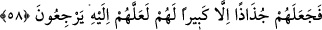
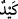
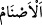
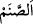

bir yolunu bulacak, çalışıp çabalayıp sizin putlarınızı kıracağım. Nitekim el-İrşâd’da
“Mutlaka onları kırmaya çalışacağım.” denilmiştir. Burada putları kırma işinin
zorluğuna, hatta bunun için bir takım hilelere başvurmak gerektiğine işaret vardır.
Kâşifî der ki: “Onlardan/putlardan ayrıldıktan, yâni bayram yerine gittikten ve onlara
arkanızı dönüp onları bıraktığınız ve gezinti yerine gittiğiniz zaman” bir yolunu bulup
putlarınızı kırarım.
Şeyhzâde, İmam (Râzî)’nin tefsirinden naklen şöyle der: “Eğer ‘Âyette niçin
“putlarınıza bir oyun oynayacağım.” buyrulmuştur? Halbuki “” zarar vermek
maksadıyla başkasına hissetmeyeceği bir yönden hîle yapmaktır. Putlar ise kırma ve
benzeri şeylerden gelecek zararı hissetmezler. Yine onları kırmak için tuzak kurmaya
gerek yoktur. Çünkü tuzak, şuur sahibi olan varlıklar hakkında söz konusu olur.” denirse,
buna şöyle cevap verilir: “Âyetteki bu ifade, sözü geniş tutma kabîlindendir.Çünkü
kavmi, putların şuur sâhibi varlıklar olduğuna inanıyorlardı. Onlara zarar vermenin
(yâni zararı hissetmelerinin) mümkün olduğunu iddiâ ediyorlardı. İşte İbrahim (a.s.),
sözünü iddiâsına binâen söylemiştir.”
Bu söz ile kastedilenin: “Putlarınız hakkında size bir tuzak kuracağım.” demek olduğu
da söylenmiştir. Çünkü, onun putları kırması, puta tapanlarda büyük bir üzüntü meydana
getirmiştir.
“ kelimesi “ (put)” kelimesinin çoğuludur. Sanem/put; bakır, gümüş ya da
odundan yapılmış bir cüsse/heykeldiir. İnsanlar onlara kendilerini Allâh’a
yaklaştıracağı düşüncesiyle tapıyorlardı. Nitekim el-Müfredât’ta böyle geçmektedir.
58. Sonunda İbrahim onları paramparça etti. Yalnız onların büyüğünü bıraktı;
belki ona müracaat ederler diye.
“Sonunda İbrahim onları paramparça etti. Yalnız onların büyüğünü bıraktı.” Yâni,
büyük putu kırmadı, onu kendi haline bıraktı. Boynuna da baltayı astı. Bahsi geçen puta
büyük denilmesinin sebebi ya tapanların ona aşırı saygı göstermelerinden ya da onun
diğer putlara göre daha iri olmasındandır. Bunların her ikisi birden de olabilir. “belki
ona” büyük puta “müracaat ederler diye.” Belki ona müracaat ederler de putları kimin
kırdığını sorarlar diye. Çünkü, müşkillerin halli konusunda kendisine mürâcaat edilmesi
bir mâbudun şânındandır. Böyle yaparak İbrahim (a.s.) onların cehâletlerini ortaya
çıkarmak ve onları ayıplamak istemiştir. Bahru’l-ulûm’da böyle denilmektedir.
“Ona” zamirinin İbrâhim (a.s.)’a âit olması da mümkündür. Buna göre mânâ şöyle
olur: “Belki ona” İbrahim (a.s.)’a “mürâcaat ederler diye.” Çünkü İbrahim (a.s.),
onlar arasında dinlerini inkâr etmesi, ilahlarına hakaret etmesi ve düşmanlık
beslemesiyle meşhur olmuştu. Bu îzâha göre Hz. İbrahim’in maksadı, “Belki büyükleri